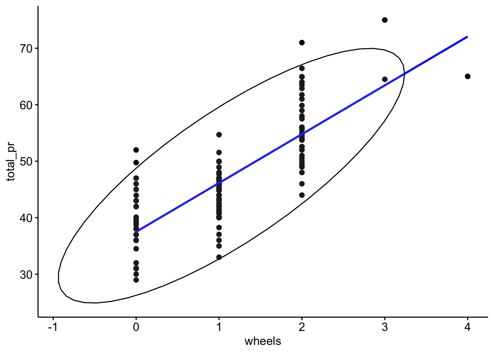
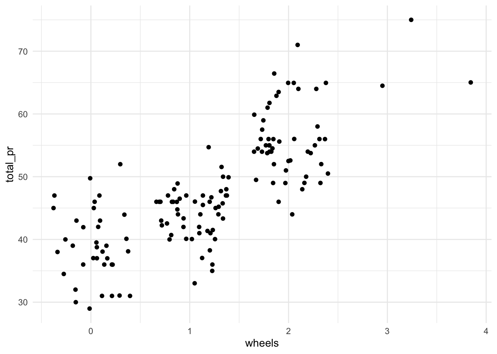
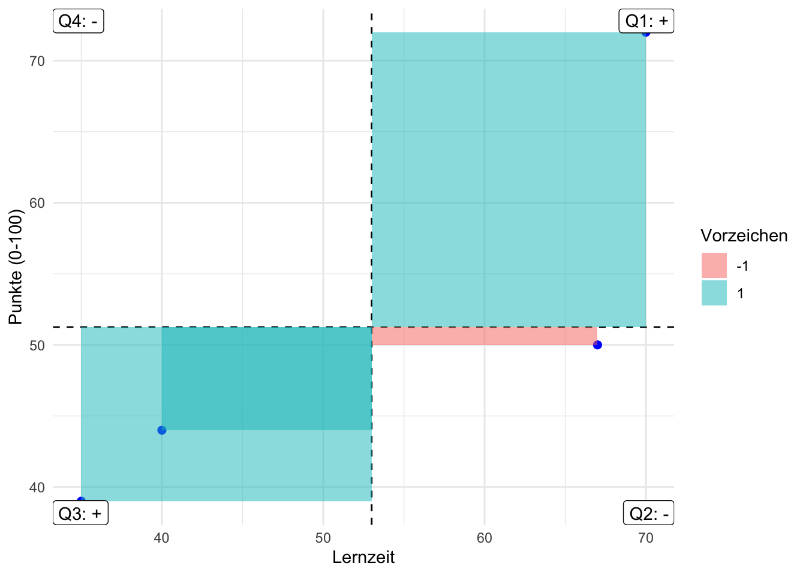
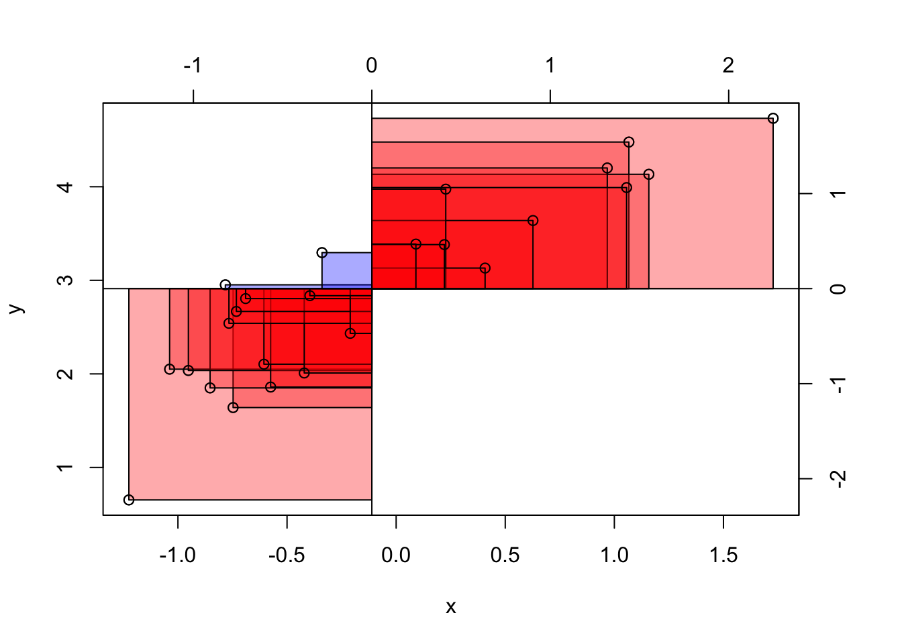
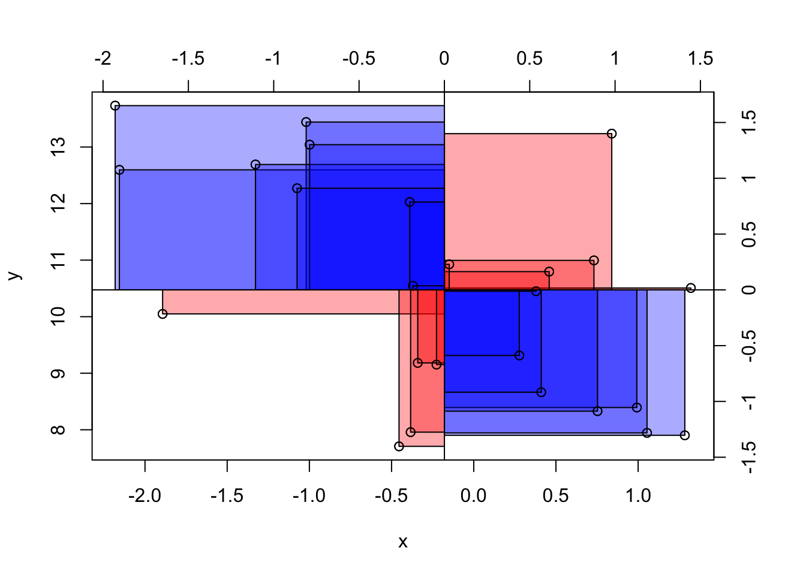
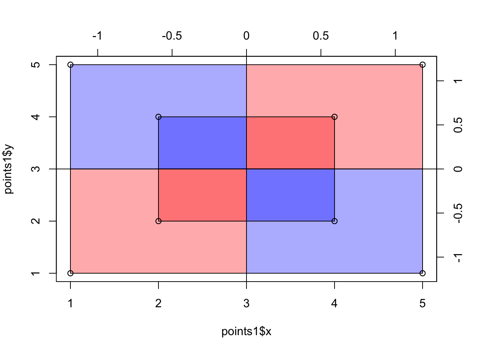
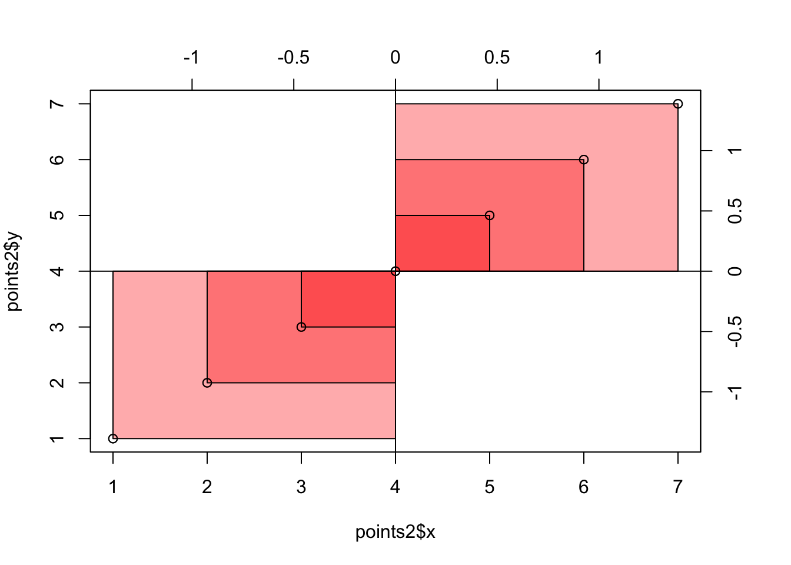
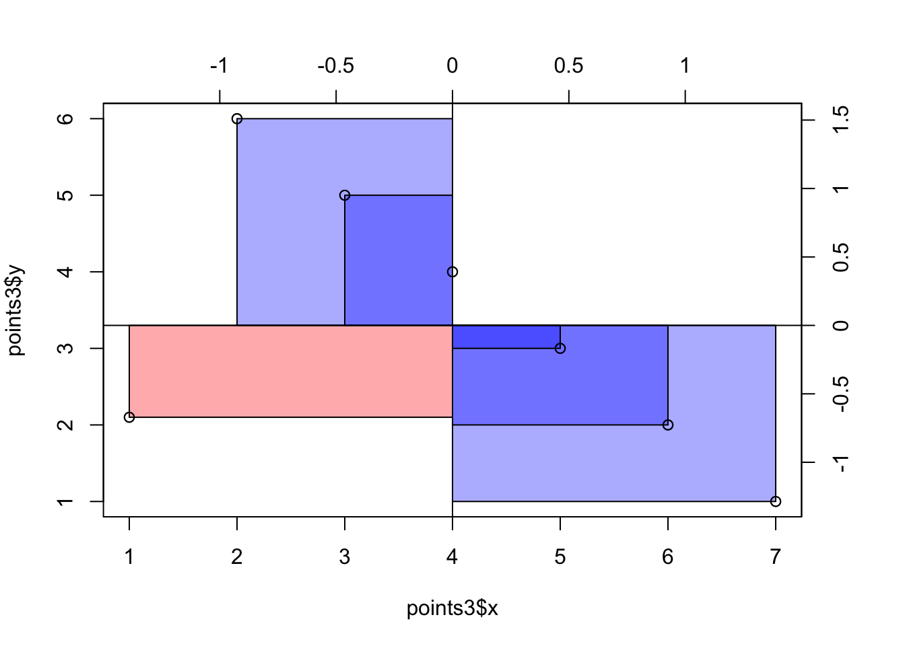
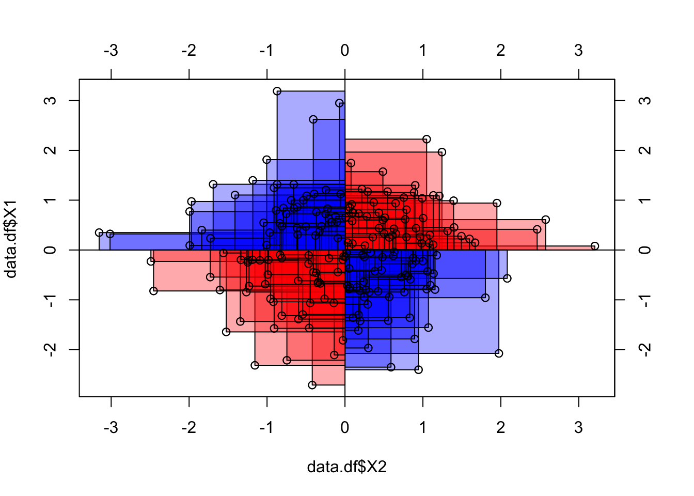
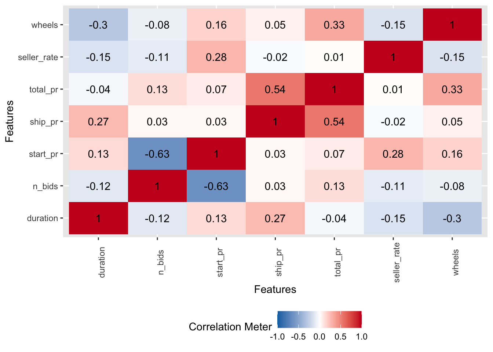

mariokart <- read.csv("https://vincentarelbundock.github.io/Rdatasets/csv/openintro/mariokart.csv")8 Punktmodelle 2
8.1 Lernsteuerung
8.1.1 Standort im Lernpfad
Abbildung 1.2 zeigt den Standort dieses Kapitels im Lernpfad und gibt damit einen Überblick über das Thema dieses Kapitels im Kontext aller Kapitel.
8.1.2 Lernziele
- Sie können die Begriffe Kovarianz und Korrelation definieren und ihren Zusammenhäng erläutern.
- Sie können die Stärke einer Korrelation einschätzen.
8.1.3 Benötigte R-Pakete
In diesem Kapitel benötigen Sie folgende R-Pakete.
8.1.4 Benötigte Daten
8.2 Zusammenfassen zum Zusammenhang
In Kapitel 6 haben wir gelernt, dass das Wesen eines Punktmodells als Zusammenfassung einer Spalte (eines Vektors) zu einer einzelnen Zahl1, zu einem “Punkt” sozusagen, zusammengefasst werden kann.
In diesem Kapitel fassen wir zwei Spalten zusammen, wieder zu einer Zahl, s. Gleichung 8.1.
\[\begin{array}{|c|} \hline \\ \hline \\\\\\ \hline \end{array} + \begin{array}{|c|} \hline \\ \hline \\\\\\ \hline \end{array} \qquad \rightarrow \qquad \begin{array}{|c|} \hline \\ \hline \hline \end{array} \tag{8.1}\]
Wo wir in Kapitel 6 eine Variable mit Hilfe eines Lagemaßes beschrieben/dargestellt/zusammengefasst/modelliert haben, tun wir hier das Gleich für zwei Variablen. Beschreibt man aber zwei Variablen, so geht es um die Frage, was die beiden Variablen miteinander zu tun haben: Wie die beiden Variablen von einander abhängen bzw. miteinander (irgendwie) zusammenhängen. Wir begrenzen auf metrische Variablen.
Die Verbildlichung2 zweier metrischer Variablen haben wir bereits in Kapitel 5.5.2 kennengelernt. Zur Verdeutlichung, wie ein Zusammenhang zweier metrischer Variablen aussehen kann, helfe noch einmal Abbildung 8.1.


8.3 Abweichungsrechtecke
8.3.1 Noten und Abweichungsrechtecke
Beispiel 8.1 (Wieder Statistiknoten) Anton, Bert, Carl und Daniel haben ihre Statistikklausur zurückbekommen. Die Lernzeit \(X\) scheint mit der erreichten Punktzahl \(Y\) (0-100, je mehr desto besser) zusammenzuhängen.3 Gar nicht so schlecht ausgefallen, s. Tabelle 8.1.\(\square\)
| id | y | x |
|---|---|---|
| 1 | 72 | 70 |
| 2 | 44 | 40 |
| 3 | 39 | 35 |
| 4 | 50 | 67 |
Zeichner wir uns die Daten als Streudiagramm, s. Abbildung 8.2. Dabei zeichnen wir noch Abweichungsrechtecke ein.
Definition 8.1 (Abweichungsrechteck) Im zweidimensionalen Fall spannt sich ein Abweichungsrechteck vom Mittelwert \(\bar{x}\) bis zum Messwert \(x_i\) und genauso für \(Y\). Wir bezeichnen mit \(dx_i\) die Distanz (Abweichung) vom Mittelwert \(\bar{x}\) bis zum Messwert \(x_i\) (und analog \(dy_i\)), also \(dx_i = x_i - \bar{x}\). Die Fläche des Abweichungsrechtecks ist dann das Produkt der Abweichungen: \(dx_i \cdot dy_i\).\(\square\)

Stellen Sie sich vor, wir legen alle Rechtecke zusammen aus Abbildung 8.2. Nennen wir das resultierende Rechteck das “Summenrechteck”. Ja, ich weiß, ich strapaziere mal wieder Ihre Phantasie4. Jetzt kommt’s: Je größer die Fläche des Summenrechtecks, desto stärker der (lineare) Zusammenhang.
Beachten Sie, dass die Flächen Vorzeichen haben, positiv oder negativ (Plus oder Minus), je nach dem, in welchem der vier Quadranten sie stehen. Die Füllfarben der Rechtecke verdeutlichen dies, s. Abbildung 8.2.
Das Vorzeichen der Summe zeigt an, ob der Zusammenhang positiv (gleichsinnig, ansteigende Trendlinie) oder negativ (gegensinnig, absinkende Trendlinie) ist.
So zeigt Abbildung 8.3 links eine positive Summe der Abweichungsrechtecke und rechts eine negative Summe. Man sieht im linken Diagramme, dass die Summe der Rechtecke mit positivem Vorzeigen (rot) überwiegt; im rechten Diagramm ist es umgekehrt (blau, negativ überwiegt).


Wir können das Summenrechteck noch durch die Anzahl der Datenpunkte teilen, das ändert nichts an der Aussage, aber der Mittelwert hat gegenüber der Summe den Vorteil, dass er unabhängig ist in seiner Aussage von der Anzahl der eingegangenen Datenpunkte. Das resultierende Rechteck nennen wir das mittlere Abweichungsrechteck.
Ein Maß für den Zusammenhang von Lernzeit und Klausurpunkte ist also die Größe des mittleren Abweichungsrechtecks.
8.3.2 Kovarianz
Definition 8.2 (Kovarianz) Die Kovarianz ist definiert als die Fläche des mittleren Abweichungsrechtecks. Sie ist ein Maß für die Stärke und Richtung des linearen Zusammenhangs zweier metrischer Variablen.\(\square\)
👩🎓 Zu viele Bilder! Ich brauch Zahlen.
👩🏫 Kommen schon!
Tabelle 8.2 zeigt die Werte für die X- und Y-Abweichung und die resultierenden Flächen der Abweichungsrechtecke. Wenn Sie die Werte selber nachrechnen wollen, finden Sie den Noten-Datensatz in der Datei noten.csv.
| id | y | x | x_avg | y_avg | x_delta | y_delta | x_pos | y_pos | cov_sign | xy_area |
|---|---|---|---|---|---|---|---|---|---|---|
| 1 | 72 | 70 | 53 | 51.25 | 17 | 20.75 | TRUE | TRUE | 1 | 352.75 |
| 2 | 44 | 40 | 53 | 51.25 | -13 | -7.25 | FALSE | FALSE | 1 | 94.25 |
| 3 | 39 | 35 | 53 | 51.25 | -18 | -12.25 | FALSE | FALSE | 1 | 220.50 |
| 4 | 50 | 67 | 53 | 51.25 | 14 | -1.25 | TRUE | FALSE | -1 | -17.50 |
Berechnen wir als nächstes das mittlere Abweichungsrechteck, die Kovarianz:
d %>%
summarise(kovarianz = mean(xy_area))Die Formel der Kovarianz lautet (?eq-cov4):
\[\text{cov(xy)} = s_{xy}:=\frac{1}{n}\sum_{i=1}^n (x_i-\bar{x})(y_i-\bar{y}) = \frac{1}{n}\sum_{i=1}^n dx_i\cdot dy_i\] {#eq-cov4}.
In Worten:
- Rechne für jedes \(x_i\) die Abweichung vom Mittelwert, \(\bar{x}\), aus, \(dx_i\)
- Rechne für jedes \(y_i\) die Abweichung vom Mittelwert, \(\bar{y}\), aus, \(dy_i\)
- Multipliziere für alle \(i\) \(dx_i\) mit \(xy_i\), um die Abweichungsrechtecke \(dx_i dy_i\) zu berechnen
- Addiere die Flächen der Abweichungsrechtecke
- Teile durch die Anzahl der Beobachtungen \(n\)
Beispiel 8.2 (Variablen mit positiver Kovarianz)
- Größe und Gewicht
- Lernzeit und Klausurerfolg
- Distanz zum Ziel und Reisezeit
- Temperatur und Eisverkauf\(\square\)
Beispiel 8.3 (Variablen mit negativer Kovarianz)
- Lernzeit und Freizeit
- Alter und Restlebenszeit
- Temperatur und Schneemenge
- Lebenszufriedenheit und Depressivität\(\square\)
Drei Extrembeispiele für Kovarianz-Werte sind in Abbildung 8.4 dargestellt.



Bei einer Kovarianz von 0 ist die Fläche der Abweichungsrechtecke5, wenn man sie pro Quadrant aufsummiert, etwa gleich groß, s. Abbildung 8.5. Addiert man die Abweichungsrechtecke (unter Beachtung der Vorzeichen: rot = positiv; blau = negativ), so beträgt die Summe in etwa (oder genau) Null.
Damit ist die Kovarianz in diesem Fall etwa (bzw. genau) Null:
\[\begin{align} \sum \left(dX \cdot dY \right) &= 0\\ \Leftrightarrow \varnothing \left(dX \cdot dY \right) &= 0\\ \Leftrightarrow \text{cov} &= 0 \end{align}\]


8.3.3 Die Kovarianz ist schwer zu interpretieren
Die Kovarianz hat den Nachteil, dass sie abhängig ist von der Skalierung. So steigt die Kovarianz z.B. um den Faktor 100, wenn man eine Variable (z.B. Einkommen) anstelle von Euro in Cent bemisst. Das ist nicht wünschenswert, denn der Zusammenhang zwischen z.B. Einkommen und Lebenszufriedenheit ist unabhängig davon, ob man Einkommen in Euro, Cent oder Dollar misst. Außerdem hat die Kovarianz keinen Maximalwert, der einen perfekten Zusammenhang anzeigt.
Insgesamt ist die Kovarianz schwer zu interpretieren und wird in der praktischen Anwendung nur wenig verwendet.
8.4 Korrelation
Der Korrelationskoeffizient \(r\) nach Karl Pearson löst das Problem, dass die Kovarianz schwer interpretierbar ist. Der Wertebereich von \(r\) reicht von -1 (perfekte negative lineare Korrelation) bis +1 (perfekte positive lineare Korrelation). Eine Korrelation von \(r = 0\) bedeutet kein linearer Zusammenhang.
Die Korrelation berechnet sich wie folgt:
- Teile alle \(x_i\) durch ihre Standardabweichung, \(s_x\)
- Teile alle \(y_i\) durch ihre Standardabweichung, \(s_y\)
- Berechne mit diesen Werten die Kovarianz
Teilt man nämlich alle \(x_i\) bzw. \(y_i\) durch ihre Standardabweichung, so führt man mit \(X\) bzw. \(Y\) eine z-Transformation durch. Daher kann man den Korrelationskoeffizienten \(r\) so definieren:
Definition 8.3 (Korrelationskoeffizient r) Der Korrelationskoeffizient \(r\) ist definiert als das mittlere Produkt der z-Wert-Paare: \(r_{xy}=\frac{1}{n}\sum_{i=1}^n z^x_i z^y_i\).\(\square\)
Hinweis
Aus dem Korrelationskoeffizienten können Sie zwei Informationen ableiten:
- Vorzeichen: Ein positives Vorzeichen bedeutet positiver (gleichsinniger) linearer Zusammenhang (und umgekehrt: negatives Vorzeichen, negativer, also gegensinniger linearer Zusamamenhang).
- Absolutwert der Korrelation: Der Absolutwert des Korrelationskoeffizienten gibt die Stärke des linearen Zusammenhangs an. Je näher der Wert bei 1 liegt desto stärker der Zusammenhang.
- \(r = 0\): kein linearer Zusammenhang
- \(r = 1\): perfekter linearer Zusammenhang\(\square\)
Eine Zuordnung des Korrelationskoeffizienten zum Profil des Streudiagramms zeigt Abbildung 8.6.

Übungsaufgabe 8.1 (Korrelationsspiel) Spielen Sie das Korrelationsspiel: Sie Sehen ein Streudiagramm und müssen den richtigen Korrelationskoeffizienten eingeben.\(\square\)
Übungsaufgabe 8.2 (Interaktive Visualisierung der Korrelation) Auf der Seite von RPsychologist findet sich eine ansprechende dynamische Visualisierung der Korrelation. Nutzen Sie sie, um Ihr Gefühl für die Stärke des Korrelationskoeffizienten zu entwickeln.\(\square\)
8.4.1 Korrelation ≠ Kausation
Eine Studie fand eine starke Korrelation, zwischen der (Höhe des) Schokoladenkonsums eines Landes und (Anzahl der) Nobelpreise eines Landes (Messerli 2012), s. Abbildung 8.7.

Vorsicht
Korrelation (bzw. Zusammenhang) ungleich Kausation! Korrelation kann bedeuten, dass eine Kausation vorliegt, aber es muss auch nicht sein, dass Kausation vorliegt. Liegt Korrelation ohne Kausation vor, so spricht man von einer Scheinkorrelation.
8.4.2 Korrelation misst nur linearen Zusammenhang
Beispiel 8.4 (Scheinkorrelation) Eine Urban Myth besagt: Die Anzahl der Störche pro Landkreis korreliert mit der Anzahl der Babies in diesem Landkreis.
Bald men at higher risk of severe case of Covid-19, research finds6
Macht die Glatze krank? Männer mit Glatze bekommen häufiger Corona (Goren u. a. 2020).
Hier finden Sie weitere Beispiele für Scheinkorerlation.\(\square\)
8.5 Fallbeispiel
In Ihrer Arbeit beim Online-Auktionshaus analysieren Sie, welche Variablen mit dem Verkaufspreis von Computerspielen zusammenhängen.
Falls der Datensatz auf Ihrem Computer (am besten in Ihrem Projektverzeichnis in RStudio) abgelegt ist, können Sie die Daten so (in mittlerweile gewohnter Manier) importieren:
mariokart <- read.csv("mariokart.csv")Falls der Datensatz im Unterordner mit Namen “Mein_Unterordner” liegt, so würden Sie folgenden Pfad eingeben:
mariokart <- read.csv("Mein_Unterordner/mariokart.csv")Man beachte, dass solche sog. relativen Pfade (relativ zu Ihrem Arbeitsverzeichnis, d.h. Ihr Projektverzeichnis in R-Studio) nicht mit einem Schrägstrich (Slash) beginnen.
Falls Sie die Daten nicht auf Ihrem Computer haben, können Sie sie komfortable von z.B. der Webseite von Vincent Arel-Bundock herunterladen:
mariokart <- read.csv("https://vincentarelbundock.github.io/Rdatasets/csv/openintro/mariokart.csv")Sie wählen die Variablen von mariokart, die Sie interessieren - natürlich nur die metrischen - und lassen sich mit cor die Korrelation aller Variablen untereinander ausgeben:
mariokart %>%
dplyr::select(duration, n_bids, start_pr, ship_pr, total_pr, seller_rate, wheels) %>%
cor() %>%
round(2) # Runden auf zwei Dezimalen
## duration n_bids start_pr ship_pr total_pr seller_rate wheels
## duration 1.00 -0.12 0.13 0.27 -0.04 -0.15 -0.30
## n_bids -0.12 1.00 -0.63 0.03 0.13 -0.11 -0.08
## start_pr 0.13 -0.63 1.00 0.03 0.07 0.28 0.16
## ship_pr 0.27 0.03 0.03 1.00 0.54 -0.02 0.05
## total_pr -0.04 0.13 0.07 0.54 1.00 0.01 0.33
## seller_rate -0.15 -0.11 0.28 -0.02 0.01 1.00 -0.15
## wheels -0.30 -0.08 0.16 0.05 0.33 -0.15 1.00
Namensverwechslung (name clash)
Es kann vorkommen, dass Sie zwei R-Pakete geladen haben, in denen es jeweils z.B. eine Funktion mit Namen select gibt. R wird in dem Fall diejenige Funktion verwenden, deren Paket Sie als letztes gestartet haben. Das kann dann das falsche select sein, wie es mir oben in der Syntax passiert ist. In dem Fall resultiert eine verwirrende Fehlermeldung, die sinngemäß sagt: “Hey Mensch, du hast Argumente in der Funktion verwendet, die du gar nicht verwenden darfst, da es sie nicht gibt.” Auf Errisch: Error in select(., duration, n_bids, start_pr, ship_pr, total_pr, seller_rate, : unused arguments (duration, n_bids, start_pr, ship_pr, total_pr, seller_rate, wheels). Eine einfache Abhilfe ist es, R zu sagen: “Hey R, nimm gefälligst select aus dem Paket dplyr, dort”wohnt” nämlich select. Auf Errisch spricht sich das so: dplyr::select(...).\(\square\)
Etwas schöner sieht die Ausgabe mit dem Befehl correlation aus easystats aus, s. Tabelle 8.3.
mariokart %>%
dplyr::select(duration, n_bids, start_pr, ship_pr, total_pr, seller_rate, wheels) %>%
correlation() Tabelle 8.3:
Korrelationstabelle (tidy) im Datensatz mariokart
Neben einigen Statistiken, die wir einfach geflissentlich ausblenden (t und p) beinhaltet die Tabelle eine interessante Information: den Schätzbereich für die Korrelation, gekennzeichnet als 95% CI. Grob gesagt können wir diese Information so interpretieren: “Mit 95% Wahrscheinlichkeit liegt der echte Wert der Korrelation in folgendem Bereich.”7
Möchte man nur einzelne Korrelationskoeffizienten ausrechnen, können wir die Idee des Zusammenfassens, s. Gleichung 8.1, nutzen:
mariokart %>%
summarise(cor_super_wichtig = cor(total_pr, wheels))
Vorsicht
Im Falle von fehlenden Werte müssen Sie R aus seiner schüchternen Vorsicht befreien und ermutigen, trotz fehlender Werte einen Korrelationskoeffizienten auszugeben. Das geht mit dem Argument use = "complete.obs" in cor:
mariokart %>%
summarise(cor_super_wichtig = cor(total_pr, wheels, use = "complete.obs"))🧑🎓 Immer so viele Zahlen! Ich brauch Bilder.
Mit dem Befehl plot_correlation aus dem R-Paket {dataExplorer} bekommt man eine ansehnliche Heatmap zur Verdeutlichung der Korrelationswerte, s. Abbildung 8.8.
library(DataExplorer)
mariokart %>%
dplyr::select(duration, n_bids, start_pr, ship_pr, total_pr, seller_rate, wheels) %>%
plot_correlation()
8.6 Vertiefung
TED-Vortrag zum Thema Scheinkorrelation.
8.7 Aufgaben
Goren, Andy, Sergio Vaño-Galván, Carlos Gustavo Wambier, John McCoy, Alba Gomez-Zubiaur, Oscar M. Moreno-Arrones, Jerry Shapiro, u. a. 2020. „A Preliminary Observation: Male Pattern Hair Loss Among Hospitalized COVID-19 Patients in Spain – A Potential Clue to the Role of Androgens in COVID-19 Severity“. Journal of Cosmetic Dermatology 19 (7): 1545–47. https://doi.org/10.1111/jocd.13443.
Messerli, Franz H. 2012. „Chocolate Consumption, Cognitive Function, and Nobel Laureates“. New England Journal of Medicine 367 (16): 1562–64. https://doi.org/10.1056/NEJMon1211064.
auch Skalar genannt↩︎
Visualisierung↩︎
> 🧑🎓 Typisches Lehrerbeispiel!!↩︎
hoffentlich nicht Ihre Geduld↩︎
Bei der Varianz waren es Quadrate, bei der Kovarianz sind es Rechtecke.↩︎
https://www.telegraph.co.uk/global-health/science-and-disease/bald-men-higher-risk-severe-case-covid-19-research-finds/, Abruf 2023-03-24↩︎
Bayesianische Interpretation↩︎